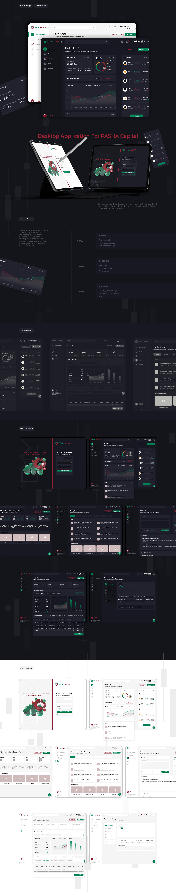

Sürətli baxış
Balans, portfel bölgüsü və əsas statistika ilk ekranda prioritetləşdirilir.
UX/UI Design
Portfel məlumatlarını, bazar göstəricilərini, hesabatları və istifadəçi müraciətlərini vahid, aydın interfeysdə birləşdirən treyder paneli.

01 / Ümumi baxış
Yaşıl aksentlər, açıq neytral səthlər və modul kartlar məlumat sıxlığını idarə edir, əsas göstəriciləri və əməliyyatları ilk baxışda görünən saxlayır.
İnterfeys portfel balansı, aktiv bölgüsü, gəlir və xərc dinamikası, seçilmiş alətlər və xəbərlər kimi fərqli məlumat qatlarını vahid vizual sistemdə birləşdirir.
Modul kart quruluşu məlumat sıxlığını idarə edir, sabit naviqasiya isə panel, bazar, müraciətlər, xəbərlər və hesabatlar arasında keçidi aydın saxlayır.
02 / Yanaşma
Balans, portfel bölgüsü və əsas statistika ilk ekranda prioritetləşdirilir.
Kart əsaslı quruluş müxtəlif məlumat növlərini ardıcıl və müqayisə edilə bilən formada təqdim edir.
Əsas əməliyyatlar və dəstək kanalları görünən, rahat tapılan mövqelərdə saxlanılır.
03 / Visual Direction

04 / Design System
Aydın bölmələr və görünən geri dönüş nöqtələri.
Eyni funksiyalar üçün təkrarlanan davranış və görünüş.
Mətn, rəqəm və vizuallar arasında balanslı kontrast.
05 / Növbəti
Növbəti layihəHeydər Əliyev Fondu↗